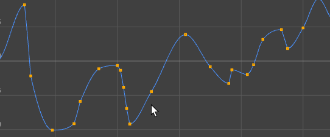

可以通过在组件上拖动鼠标光标，选择多边形网格上的多个组件。可以使用“框选”(Marquee)或“拖选”(Drag)选择多个组件。
通过框选选择多个组件
- 单击“工具箱”(Tool Box)中的“选择工具”(Select Tool)图标。
- 在“工具设置”(Tool Settings)中，将“选择样式”(Selection Style)设置为“框选”(Marquee)。
- 将矩形选框拖动到要选择的组件上。
提示： 可以拖动选框，然后按住 Alt 键将其拖动到新位置，以此在场景视图、
“UV 纹理编辑器”(UV Texture Editor)、
“曲线图编辑器”(Graph Editor)和
“摄影表”(Dope Sheet)中重新定位选框。

曲线图编辑器(Graph Editor)：拖选并按住 Alt 键以重新定位选择项
通过拖选来选择多个组件
- 单击“工具箱”(Tool Box)中的“选择工具”(Select Tool)图标。
- 在“工具设置”(Tool Settings)中，将“选择样式”(Selection Style)设置为“拖选”(Drag)。
- 拖动到要选择的组件上。
拖选类似于没有笔刷大小的“绘制选择”(Paint Selection)。与“绘制选择”(Paint Selection)不同，您可以使用拖选来选择被阻挡的组件（被其他组件覆盖的组件）。可以“基于摄影机的选择”(Camera based selection)修改该行为。请参见仅选择未阻挡的组件。
提示： 在
选择工具设置或建模工具包中禁用
“亮显最近组件”(Highlight nearest component)，以仅在光标位于组件顶部时才亮显它们。